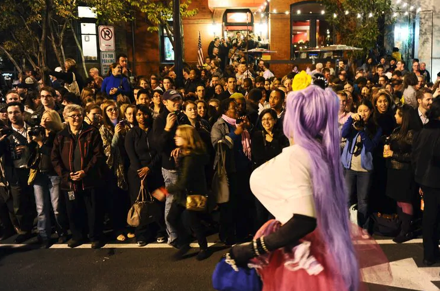

Every Halloween, seasonal celebrations rise again like zombies from the grave. Some annual parades and costume contests are worth looking forward to year after year; other bar crawls are as welcome as a rock in a pillowcase full of candy. These are our five favorites, ranked.
1. Silver Spring Zombie Walk
Saturday at 9 p.m., beginning at Georgia and Sligo avenues, Silver Spring. Free.
On the Saturday before Halloween, downtown Silver Spring transforms into an eerie scene that’s one part “Shaun of the Dead,” one part “Thriller” and a pinch of “Night of the Living Dead,” with participants shuffling and lurching down Georgia Avenue toward the AFI Silver Theatre. The annual Zombie Walk, which began as a neighborhood meetup at the Quarry House Tavern in 2008, has grown to include thousands of zombies dressed up in costumes ranging from comical and topical to truly frightening, and everyone is invited to participate, no matter how elaborate (or not) their costume.
The action kicks off with happy hour at Denizens Brewing at 6 p.m., and the actual “walk” starts three hours later a few blocks north. The goal: To reach AFI, where the midnight screening is a restored print of the 1979 Italian cult classic “Zombie.” (Advance tickets are $13 and strongly recommended.)